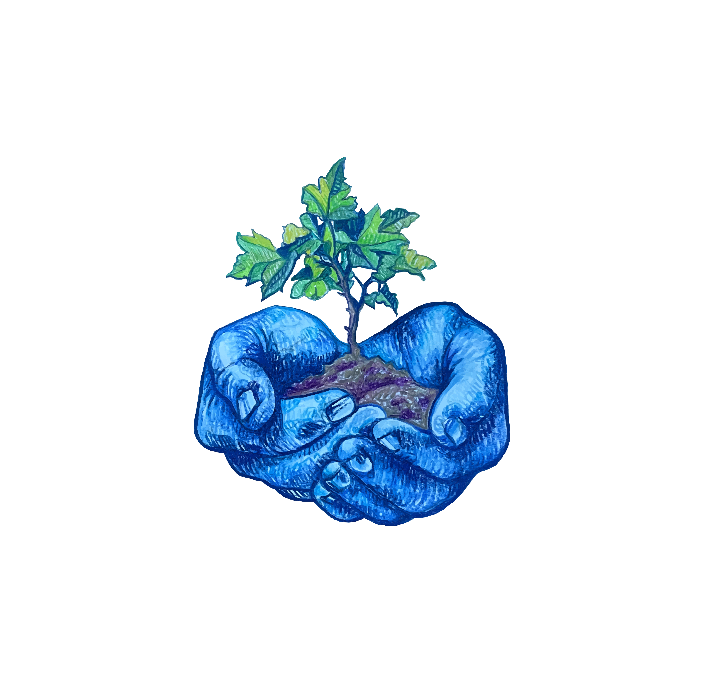
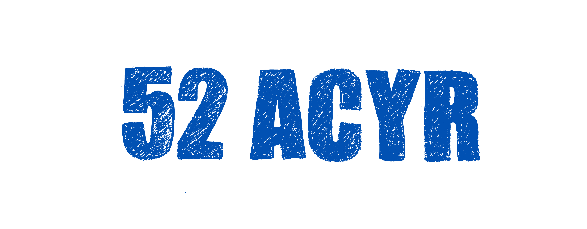
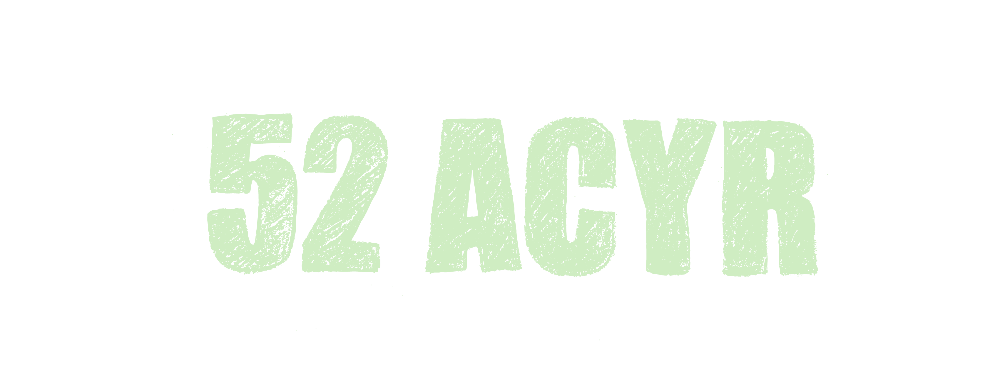
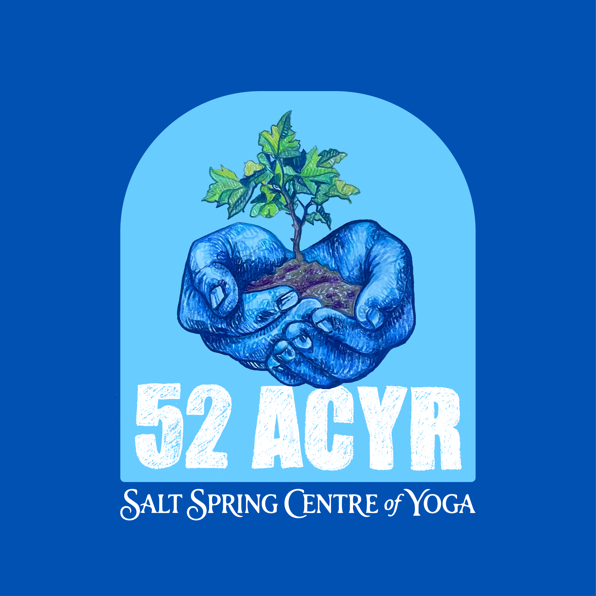
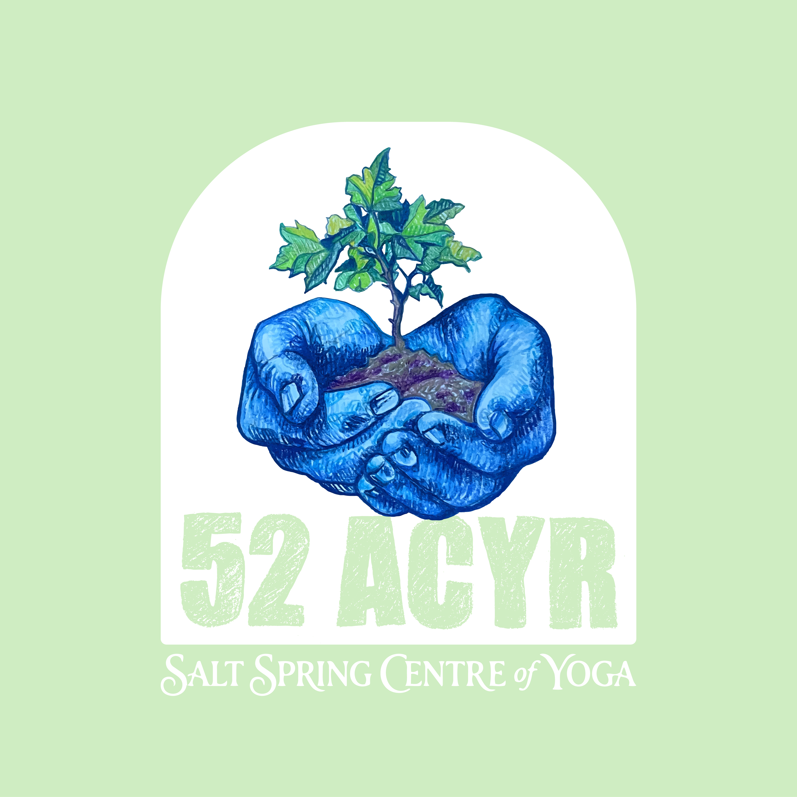
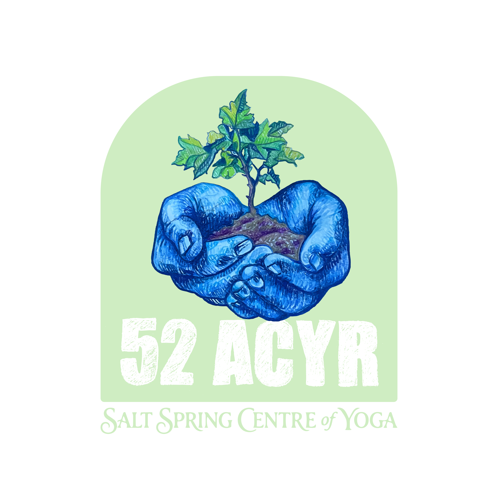
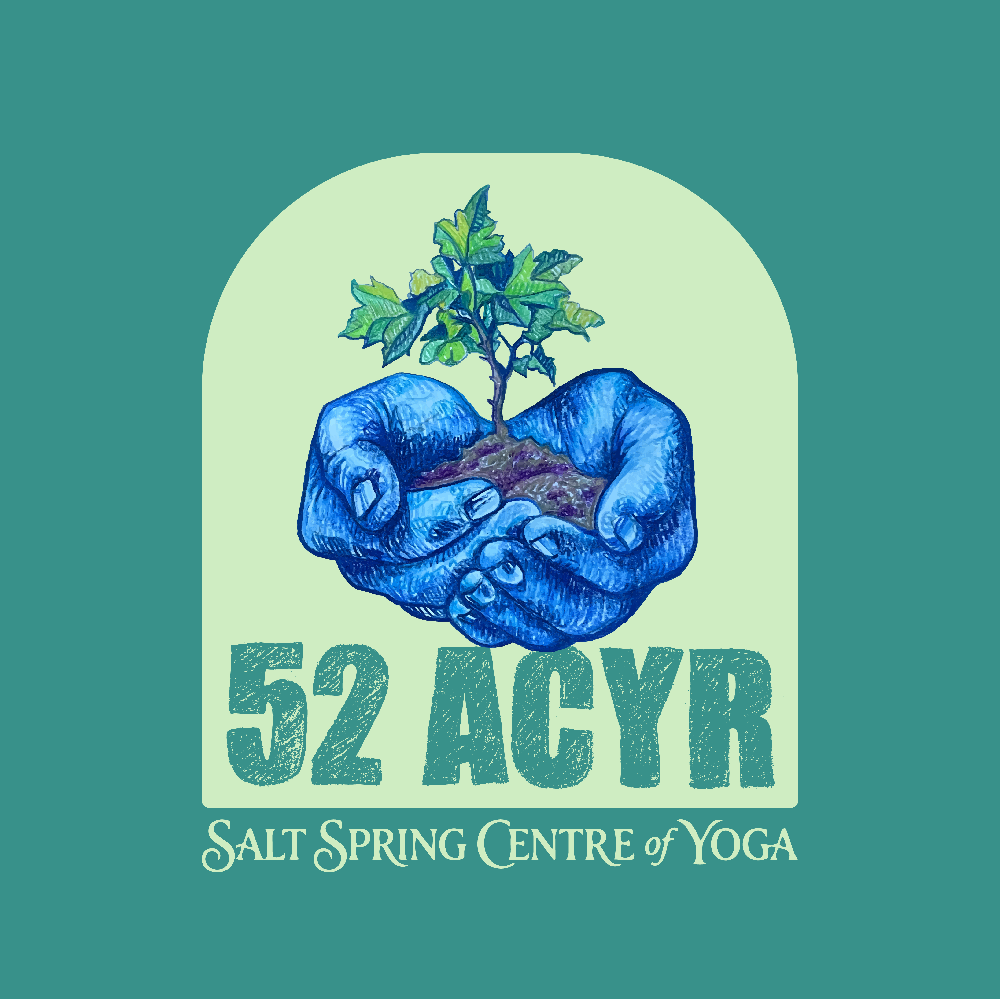
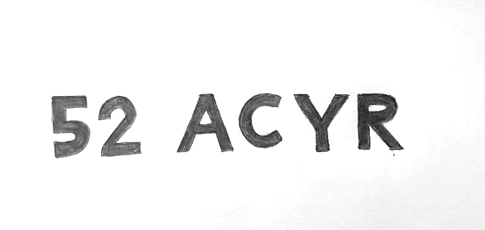

Hand + Sprout

Wordmark - Blue

Wordmark - Green

SSCY Lotus Mark

Logo presentation for the 52nd Annual Community Yoga Retreat. The hand-drawn illustration features cupped hands nurturing a young sprout - symbolizing growth, care, and community rooted in nature.







The custom lettering was hand-drawn to complement the illustrated style of the logo. The chunky, textured letterforms echo the organic quality of the hand illustration and give the mark a warm, handmade feeling.